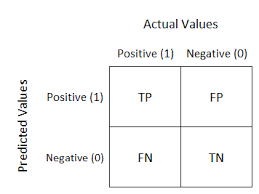
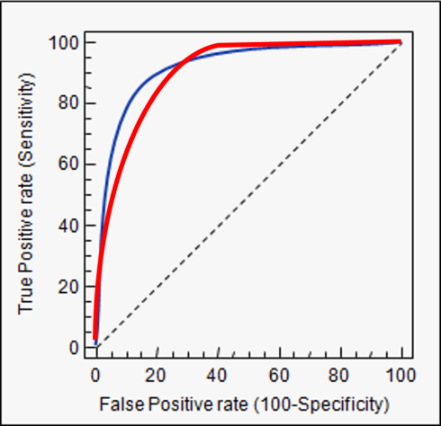
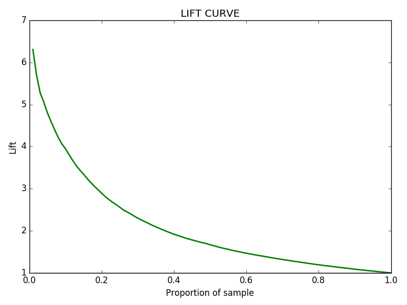
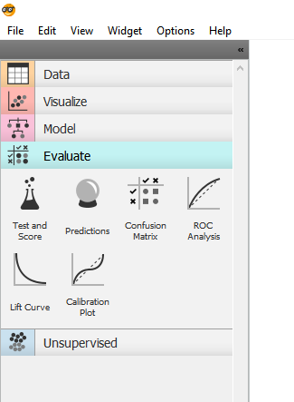
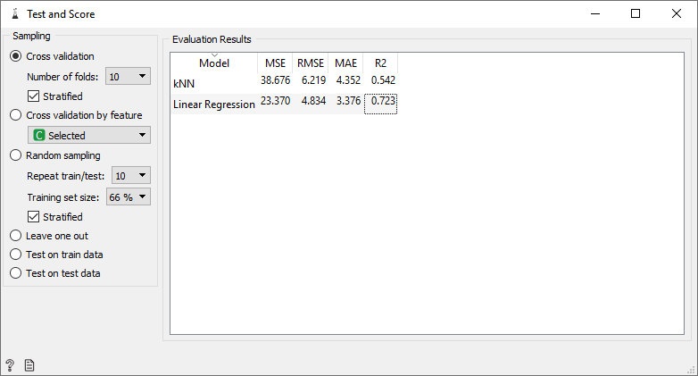

Mере квалитета модела
6.1 Мере квалитета модела код класификације
Мере квалитета модела користе се за оцењивање у којој мери је неки модел добар или лош. Мере квалитета модела које се најчешће користе код проблема класификације су матрица конфузије (Confusion Matrix), површина испод ROC криве (Receiver operating characteristic curve), лифт крива (The Lift Curve), тачност класификације (Classification accuracy), прецизност и одзив (Precision and Recall), и F1 мера.
- Матрица конфузије (Confusion Matrix)
Већина мера квалитета које се користе код класификације заснивају се на матрици конфузије. Матрица конфузије даје детаљнију слику тачних и погрешних класификација за сваку класу. Број тачних и нетачних предвиђања укршта се са вредностима предвиђања и рашчлањује се по категоријама. Она не само да даје увид у грешке класификатора, већ што је још важније стиче се утисак о врстама грешака које се чине.
Матрица конфузије је матрица М=[mij] где елемент mij означава број елемената класе i који су класификовани у класу j. У случају када је матрица конфузије дијагонална, класификација је потпуно тачна, модел класификује податке без грешке. Елементи матрице конфузије који се не налазе на главној дијагонали означавају грешке начињене приликом класификације (погрешно класификоване инстанце).
Уколико се посматра проблем бинарне класификације, тада постоје две класе, и најчешће се једна класа назива позитивном, а друга негативном класом. Тада постоје четири поља у матрици конфузије, и свака инстанца података припада тачно једној од њих.
Дефиниција поља у матрици конфузије за случај бинарне класификације:
- Стварно позитивне инстанце (True Positive - TP): Позитивне инстанце које су и од стране модела препознате као позитивне.
- Лажно негативне инстанце (False Negative - FN): Позитивне инстанце које су од стране модела проглашене негативним.
- Стварно негативне инстанце (True Negative - TN): Негативне инстанце које су и од стране модела препознате као негативне.
- Лажно позитивне инстанце (False Positive - FP): Негативне инстанце које су од стране модела проглашене позитивним.
Тада матрица конфузије има следећи облик:

Уколико је проблем класификације веће димензије, и матрица конфузије је веће димензије (при чему у том случају морамо одустати од позитивних и негативних лабела).
- Тачност класификације (Classification accuracy)
Тачност класификације као најинтуитивнија мера у оцени класификационих модела говори да ли се модел правилно тренира и како уопште може функционисати.
Тачност класификације представља удео исправно класификованих инстанци у укупном броју инстанци. Формула за израчунавање тачности класификације код проблема бинарне класификације је:
\[ Acc=(TP+TN)/(TP+TN+FP+FN) \]
Иако интуитивна, ова мера не даје детаљне информације о квалитету модела који се оцењује. Проблем са коришћењем тачности као главне метрике је тај што не даје добру информацију када постоји озбиљна неравнотежа класа (уколико на пример у једној класи има знатно више инстанци него у другој). Ово се може видети на примеру детекције терориста. Од свих људи који се разматрају, само мали број њих припада класи терориста. Уколико модел све окарактерише као да нису терористи, прецизност ће заиста бити велика (јер велики проценат људи заправо и нису терористи), али је овај модел онда потпуно бескористан.
- Прецизност и одзив (Precision and recall)
Прецизност је удео позитивних инстанци у свим инстанцама које су проглашене позитивним. Она помаже у случајевима када је удео лажних позитивних резултата велики.
\[ Prec=TP/(TP+FP) \]
Oдзив је удео пронађених позитивних инстанци у свим позитивним инстанцама. Супротно од прецизности, одзив помаже када је удео лажних негативних резултата велики.
\[ Rec=TP/(TP+FN) \]
Прецизност и одзив су мере квалитета модела које када се посматрају одвојено не дају информацију која може бити претерано корисна, зато се најчешће користе заједно.
- F1 мера
F1 мера је свеобухватна мера прецизности модела која комбинује прецизност и одзив (она је њихова хармонијска средина). Другим речима, добар резултат F1 мере значи да је удео лажно позитивних и лажно негативних резултата низак.
\[ F_1=2•(Prec•Rec)/(Prec+Rec)) \]
Када је резултат F1 мере 1, модел се сматра добрим, док је модел лоше оцењен када је резултат F1 има вредност 0, или близу 0.
- ROC крива (ROC (receiver operating characteristic) Curve)
Када је потребно проверити или визуелизовати перформансе модела којим се решава проблем класификације у две класе, користимо AUC (AUC: Area Under the ROC Curve). Ово је је једна од најважнијих техника за оцењивање перформанси бинарних класификационих модела са небалансираним класама.
ROC је крива вероватноће, а AUC представља степен или меру раздвајања, и то је реалан број између 0.5 и 1. Овај број говори колико је модел способан да разликује класе. Одличан модел има AUC близу 1, што значи да има добру меру одвојивости. Лош модел има AUC близу 0.5, што интерпретирамо као немогућност модела да на прави начин раздвоји инстанце две класе.
ROC крива је график који приказује перформансе класификацијског модела на свим нивоима класификације. Ова крива приказује два параметра:
- Стопа право позитивних (TPR)
\[ TPR=TP/(TP+FN) \]
- Стопа лажно позитивних (FPR)
\[ FPR=FP/(FP+NT) \]
ROC крива црта ове две променљиве - TPR у односу на FPR при различитим праговима класификације. Спуштањем прага класификације више ставки се класификује као позитивно, чиме се повећавају и лажни и стварни позитивни.

- Лифт крива (The Lift Curve)
Кад је у питању проблем бинарне класификације (на пример идентификовањем да ли неки пацијент има неку болест или не) алгоритми машинског учења углавном враћају вероватноћу (у овом случају вероватноћу да пацијент има болест) која је тада претворена у предвиђање (да ли пацијент има такву болест или не).
Лифт крива користи ову повратну вероватноћу да процени учинак модела и колико добро модел идентификује позитивне (болесни пацијенти) или негативне (здрави пацијенти) случајеве нашег скупа података.
Овај број се израчунава као број позитивних на одређеној тачки узорка, подељен са бројем позитивних на читавом скупу података.
\[ Lift=(broj_pozitivnih_u_određenoj_tački)/(broj_pozitivnih_na_čitavom_skupu_podataka) \]

Поменутe мере квалитета модела, али и неке додатне доступне су у окружењу Orange, на левој страни прозора, у делу под називом Evaluate (приказано на слици испод), и биће приказане у поглављима која следе.

Мере квалитета модела код регресије
Када је реч о проблему регресије, мере квалитета модела које се најчешће користе су средњеквадратна грешка и њен корен (Mean square error, Root mean square error) и коефицијент детерминације R2.
- Средњеквадратна грешка и корен средњеквадратне грешке (Мean square error MSE, Root mean square error)
Средњеквадратна грешка процељује очекивану квадрирану разлику између моделом предвиђених и стварних вредности циљне променљиве. То је збир, у свим тачкама података, квадрата разлике између предвиђених и стварних вредности циљних променљивих, подељен са бројем података.
Средњеквадратна грешка се рачуна по формули:
\[ MSE=1/n ∑_(i=1)^n(y_i-y'_i )^2 \]
Где је n – број тачака података, y_i – предвиђена вредност променљиве за дату тачку података, а y'_i – стварна вредност променљиве у тој тачки.
Корен средњеквадратне грешке представљен је кореном ове вредности. Његова предност, у односу на средњеквадратну грешку из које се и изводи, јесте чињеница да је мерен на истој скали као и циљна променљива.
- Коефицијент детерминације R2
Коефицијент детерминације интуитивно представља проценат варирања циљне променљиве који је успешно описан креираним моделом. Коефицијент детерминације је заправо квадрат корелације (сличности) између предвиђених и стварних вредности циљне промензиве; на тај начин он је са горње стране ограничен бројем 1.
Ако је коефицијент детерминације 0, то значи да се зависна промељива не може предвидети из независне променљиве. Уколико је коефицијент детерминације једнак 1, то значи да зависна променљива може да се предвиди без грешке из независне променљиве. Када је коефицијент детерминације између 0 и 1, он указује на степен до којег је зависну варијаблу могуће предвидети. Додатно, коефицијент детерминације може бити и негативан јер натренирани модел који се оцењује може бити произвољно лош.
Наведене мере квалитета код проблема регресије се у програмском окружењу Оrange могу видети кликом на оператор Test and Score
